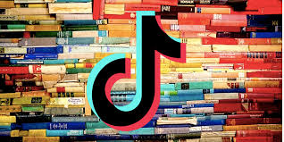
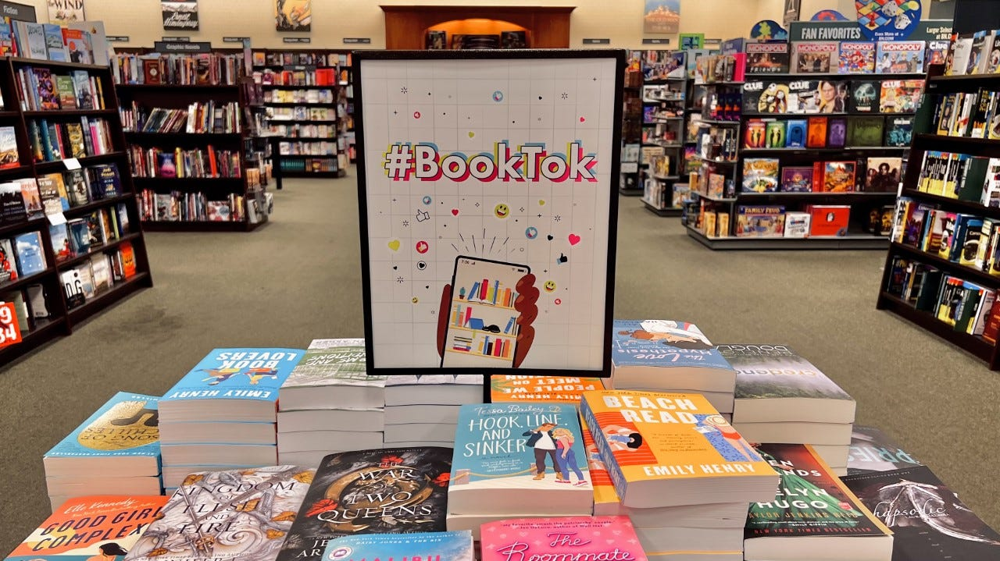
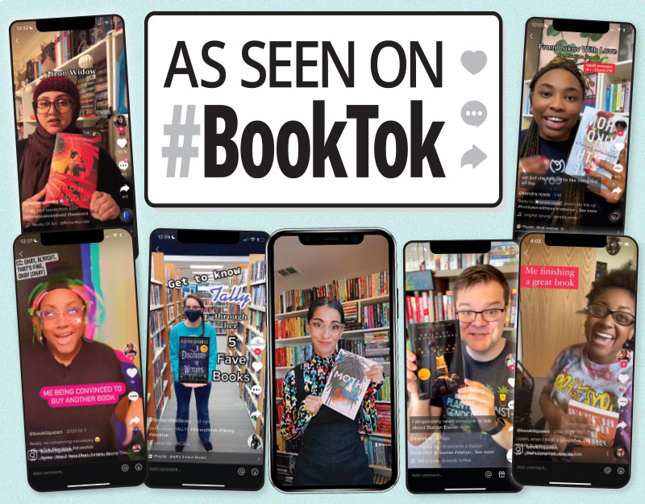

From Niche to Mainstream: The Rise of the BookTok Subculture
Let's say you recently visited a bookstore. If so, you've probably noticed a table near the front of the store filled with identical-looking paperbacks. Their names are written in a type of handwritten, beachy italicized typeface or big block letters, and they are dressed in vivid primary and pastel colors. An animated pair is depicted in beautiful drawings on the cover. Usually white, the couple is shown hugging, kissing, or frowning at each other. Christina Lauren, Emily Henry, Ali Hazelwood, Colleen Hoover, and other well-known female authors whose names you may have scrolled over on your For You Page are the authors of the majority of the novels on this table.

You'll probably notice a sign on the screen that reads #BookTok along with the recognizable, colorful musical note logo. What started out as a quiet corner of the internet has swiftly grown into a worldwide phenomenon. With over 52 million creators participating, #BookTok has amassed 370 billion views as of 2025, propelling bestsellers, revitalizing backlist titles, and impacting global reading habits.
This explosive growth hasn’t just stayed online—it has reshaped the way people discover and engage with books in their everyday lives. Titles that might have once gone unnoticed are suddenly thrust into the spotlight, often selling out in stores within days of going viral. Readers now walk into bookstores with specific recommendations they’ve seen in short-form videos, already familiar with a book’s tropes, emotional tone, and even key scenes before they’ve read a single page
"I thought TikTok was ridiculous, last year, before the first lockdown. I really did think it was just for 14-year-olds, but BookTok is such a lovely community. These are people who like the same books as me, and I can talk about the books that I like. It just seems a little bit magical. - Faith Young"

Fundamentally, community-driven content is what drives BookTok's success: character impersonations, hot takes, passionate reviews, and viral recommendations put these books on the feeds of a wide range of consumers worldwide in addition to the literary community. This means that the platform's algorithm encourages interesting and viral content, making it possible for book suggestions to reach a large (and frequently younger) audience at a rate never seen before.
Fostering an inclusive "reading is for everyone" atmosphere, sharing passionate suggestions, starting viral trends around specialized genres like romance and fantasy, and putting readers in touch with authors directly are some of its central themes. Recommendation videos, which frequently emphasize emotional impact ("bring tissues") and particular tropes, make up about half of all BookTok material. It is mostly run by women, but anyone is welcome to talk about everything from romance to horror, fantasy, and classics.